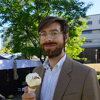

Ryan Sandell
Linguist
Welcome! I’m Ryan Sandell, a (computational) phonologist and historical linguist.
I am a UCLA-trained phonologist with a focus on historical linguistics and computational methods.
I am currently an Akademischer Oberrat (fixed-term Associate Professor) at the Ludwig-Maximilians-Universität München (LMU Munich) in the Institut für Vergleichende und Historische Sprachwissenschaft sowie Albanologie. I was first appointed as Akademischer Rat (fixed-term Assistant Professor) at the LMU in 2017, and prior to that, I was a Lecturer for the Department of Linguistics and Program in Indo-European Studies at the University of California, Los Angeles (UCLA), where I also carried out my doctoral studies (in Indo-European Studies and Linguistics).
My current principal area of research lies with the computational modeling of phonological phenomena and their implications for phonological theory, with particular attention to language change and learnability theory, employing corpus-linguistic and quantitative methods across the board. Data from some of the earliest-attested Indo-European languages (e.g., Sanskrit, Ancient Greek, Gothic) form the empirical core of my work.
My most recent book-length project was a study of prosodic change in stress and lexical accent systems. This project constituted my Habilitation thesis at the LMU Munich.